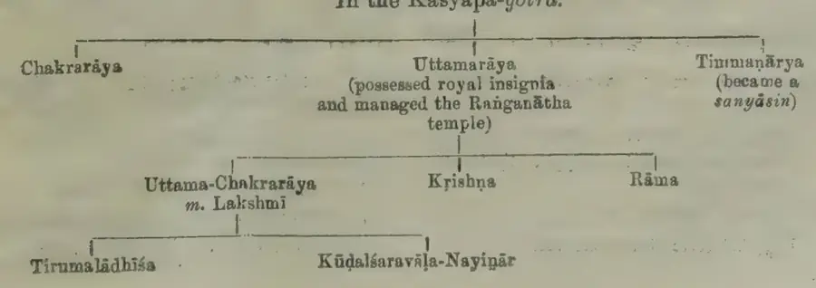
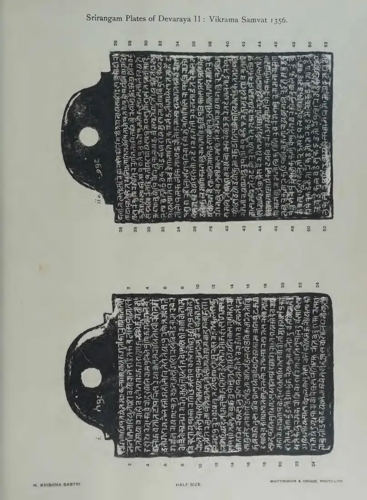
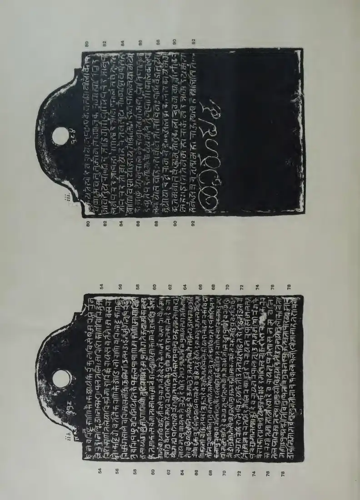

Srirangam copper-plates of Devaraya II : Saka-Samvat 1356
No. 17.—SRIRANGAM COPPER-PLATES OF DEVARAYA II; SAKA-SAMVAT 1356.
BY S. V. VISWANATHAN, M.A., MANNARGUDI, AND THE LATE MR. T. A. GOPINATHA RAO, M.A.,
TRIVANDRUM.
This is another set of copper-plates of the Vijayanagara king Dēvarāya II in the possession of the authorities of the Śrī-Raṅganātha temple at Śrīraṅgam (see above, Vol. XVII, No. 8). It was examined by the Assistant Archeological Superintendent for Epigraphy, Madras, in his Ep. Rep. for 1906, and noted as No. 19 of App. A. We edit the inscription below from inked estampages kindly supplied by Rao Bahadur H. Krishna Sastri. The description of the plates as noted on his office copy runs as follows: "Three plates in a ring in the Raṅganātha temple at Śrīraṅgam." The following further details may be added:—
The inscription is written on three1 copper-plates with a ring hole at the top. The first and third plates are engraved only on their inner sides. They measure 11:3" in length including the arch at the top, and 7" in breadth. The hole has a diameter of '75". The first and second plates are numbered at the left hand top corner with the Kannaḍa numerals 1 and 2 and the word puṭa in Nāgari; the third plate bears the Kannaḍa numeral 3 just below the ring hole. The rims of the plates are slightly raised. The writing runs across the breadth of the plates, is legible and devoid of any erasures. The average height of a letter is '25". The inscription is in the Nandi-Nāgari characters. But the signature Śrī-Vīrūpāksha at the end is in Kannaḍa. The Tamiļ letters ļ and ŷ have been used in lines 51, 58, 65, the latter being sometimes expressed by a rēpha marked above the letter ra (e.g., in ll. 50, 51, 53). The languages employed are Sanskrit which is largely the language of the inscription and Tamiļ (Dēśabhāshā) which is used in describing the details of the property granted. The latter is here and there interspersed with a few Kannaḍa words.
The orthographical peculiarities to notice in this inscription are:—the insertion of an anusvāra before n and n and the labial m, e.g., puṭṇya for puṇya (ll. 4 and 12), sāṅmrājya for sāmrājya (l. 20) and hiraṇṇya for hiraṇya (l. 66); the doubling of consonant after an anusvāra, as in bhrāntta (l. 30), iṅtta for iṅda (l. 47), maṅchchal (l. 49); and the omission of the visarga or the consequent doubling of s in chatusīmā (l. 38) and prāptai sarvair and āyai samanvītam (l. 44).
The genealogy of the first Vijayanagara dynasty, given in the inscription, runs thus:

1 Originally, it appears as if only two villages were granted by these three plates, but after reconsideration the number of villages was changed to five and a revised second plate was added without, however, destroying the original second plate for which this was substituted. Thus there are now four plates in the set, the second of which has to be deleted inasmuch as the revised fresh plate has to take its place. Care was taken to begin the revised second plate with the same word as in the old plate and end it similarly with the same word as in the old one, so that the passage might fit in with the context of the first and the third plates, though in the middle a few more verses in praise of Dēvarāya II and some lines regarding the additional villages were added. The odd plate which Mr. Venkayya noted under 'Remarks' in his Ep. Rep. for 1906, App. A., No. 20, was perhaps the original second plate.
The date of the grant is expressed by the chronogram rasēshurāmachandra=1356 of the Śaka era which corresponded to the cyclic year Āananda, the Paurṇimā day of Vaiśākhā. On this day and on the occasion of the Hēmāśvaratha-mahādāna, the king granted the five villages of Kulamāṇikyanallūr alias Nāchchikrurchchi, Tiruvaraṅganallūr, Rāma-nārāyaṇanallūr, Kumārakkuđi, and Rājanārāyaṇanallūr. These villages were situated in Chōlā-maṇdala and in the Trisirāppalli-rājya. The first three villages were on the southern bank of the river Kāvēri, in Rājagambhīra-valanāđu. The last two villages were on the northern bank of the Kāvēri,—Kumārakkuđi being situated in the western half of Malā-nāđu and Rājanārāyaṇanallūr being in the eastern half of the same division. Thus the villages given lay on either bank of the Kāvēri. Of these places, Nāchchikurchchi is the village Nāchchikkurichi in the Trichinopoly Taluk. The donee was Valīyadīmaini-layiṭta-Perumāl-Uttamanambi, son of Uttamanambi, who belonged to the Kāśyapa-gōtra Rīk-śākhā and the Āśvalāyana-sūtra. He was the śthānapati of the Śrīraṅgam temple and the above said villages were evidently granted to him for conducting the daily worship of the god Śrīraṅganātha.
A large number of taxes and incomes accruing from the villages are enumerated in the inscription such as those on nañjai (wet-land), puñjai (dry-land), kamuku (areca grove), karṇnu, vaippu (Margo-a), tennamaram (coconut trees), kolūndu, vālai (plantain trees), karumbu (sugarcane), mañjal (turmeric), iñji (ginger), śeñkalūnir (flower) and other vāṇ-payir (minor cultivation); vāśal-vari, pēr-kađamai, tarī-kkađamai (tax on looms), mara-kkađamai (tax on trees), śekku-kađamai (tax on oil mills), māvađai, maravađai, kulāvađai, idatorai, pulvari, mandai-kaṇdērram, olugu-nīr-pāṭtam, ullāyam, vil-paṇam, maghamai, mallāyi-maghamai, ina-vari, nāṭtu-kāṇikkai, kadđāyam, kīrukulā-viśēsham, araśupēru, nallerudu (good bull), nal-kidā (good sheep), nal-paśu (good cow), palatalī, ariśī-kāṇam, talaiyārīkkam, mādārīkkai, rāyasavarttanai, avasaravarttanni, kaṭṭigevarttanai, karaṇike, jōđi, nīrāṇivari (water tax), nāṭtukaṇakkuvari akkasālevari, ālamañji, ūlīgam (service), etc.
The above list includes taxes and customary dues levied in ancient times. We have not the means of knowing the proportion of the taxes to the produce, the right incidence of taxation, etc. It is clear, however, that no produce from the land or any other property was left untaxed. The various kinds of proceeds from the villages, as enumerated in our record, disclose how carefully municipal taxes were levied in South India under Vijayanagara kings. The incomes granted to the donee included vari (revenue taxes), magamai and surika (tolls).
The donee Valīyadīmainilayiṭta-Perumāl-Uttamanambi who, under the name Uttamanambi, has been already referred to in the Śrīraṅgam Plates of Harihararāya-Uđaiyar III (above, Vol. XVI, page 223), is said in the Kōyilolūgu—the temple history of Śrīraṅgam in Tamil—to have made some additions and repairs to the Raṅganātha temple. The same work also refers to him by the names Meynilaiyiṭta-Uttamanambi and Ellainilaiyiṭta-Uttamanambi. Two other relations of his who, like himself, had been the managers of the temple were Periyakrīshṇarāya-Uttamanambi and Tirumalainātha-Uttamanambi. The Lakshmīkāvya, a Sanskrit poem written by the latter, gives the genealogy of the family as under :—
In the Kāśyapa-gōtra.

In the above pedigree, Uttamarāya the brother of Chakrarāya must be identical with the donee of our grant. According to the Kōyiloṇyu,1 he set up an image of Garuḍa in front of the central shrine of Raṅganātha in Śaka 1387 and replaced the image of Rāma, which was originally installed by Vikrama-Chōla but which was destroyed by the Musalmans. It is also stated that he obtained from Gajavēṭtai Pratāpa-Dēvarāyamabārāya for himself the sole management of the Raṅganātha temple, and the title Chakrarāya for his brother and that he was in power from Śaka 1340 to 1366.
The inscription states that the verses were composed by Rājasēkhara. We do not find mention of the name of Rājasēkhara in any of the hitherto known grants of the first Vijayanagara dynasty. We find that some inscriptious of the time of Dēvarāya II were engraved by one Muddaṇṇa.
TEXT.2
[Metres : vv. 1 and 2, 4 to 36, 43 to 46 and 48 Anushṭubh ; vv. 3, 37 and 42 Śārdūlavikriḍita ; vv. 38 and 47 Śālini ; vv. 39, 40 and 41 Āryā-Gṭti.]
First Plate.
- 1 श्रीगणाधिपतये नमः । कल्याणयास्तु जगतां कारुण्यं कलभा-
- 2 ननं । अमादियूनोः शिवयोरानंदाद्वैतकं[द]कं ।[१*] स पायात्स-
- 3 ततं मायावराहो वदनेन यः । जगदात्मा जलनिधैर्ज्जगतीमु-
- 4 ददीधरत् ।[१ २*] काधेरीहृदयाभिरामपुद्धिने पुं(पु)ण्ये जगन्मंग(के) चं-
- 5 द्रांभोजवतीतटोपरिसरे धात्वा सम[१*]राधिते । श्रीरंगे भु[ज*]गें-
- 6 द्रभोगशयने लक्ष्मीमहीसेविते शेते यः पुरुषोत्तमः स भ-
- 7 ३गवांनरायणः पातु वः ।[१ ३*] नमस्तुंगशिरश्चुंबिचंद्रधामरच[१*]र-
- 8 वे । त्रैलोक्यनगरारंभम्[ल*]स्तंभाय शंभवे ।[१ ४*] अस्ति क्षीरार्णवो नाम
- 9 त्रिदशायुष्कारणं । उत्तंसोपवनं शभोश्शुध्धां(द्वां)तप्रभवो ह-
- 10 रेः ।[१ ५*] ततोजनि४ सुधासूतिश्म(स्म)हायः पुष्पधन्वनः । मुरारिर्वामनयनं
- 11 मूर्त्यतरमुमापतेः५ ।[१ ६*] तत्सूनोः सौम्यतो जाता बाहुजा बाहुशा-
- 12 स्तिनः । पुरुरवःप्रमृतयः६ पुं(पु)ण्यश्लोकपुरस्सरा७ ।[१ ७*] तत्कुले सत्कु-
- 13 लनिधिर्यदुर्माम वृपोजनि । तद्दशे संगमो जज्ञे संगमस्म८-
- 14 संपदां ।[१ ८*] तत्सुतो बुक्कभूपो[भू]त९ शीर्यधैर्यनिवासभूः । महारा-
1 Ind. Ant., Vol. XL., p. 141 ff.
2 From ink-impressions supplied by M. R. Ry. Rao Bahadur H. Krishna Sastri.
3 Read ८वाद्वा९.
4 ते; is a correction from तिः.
5 क, is inserted below the line.
6 ति of जनि is inserted above the line.
7 भु has in addition the consonantai sign of र.
8 भु is corrected from भा Read भक्कौ९.
15 जो हरिहरस्तस्तुरशिषन्महीं ।[। २*] देवराजोभवत्तस्य नंदनः
16 साधुनंदन । दोहंडखंडितारतिमंडलश्वंडविक्रमः ।[। १०*] ततो वि-
17 जयराजोभूत्सर्वविद्यासुधांबुधिः । निजाज्ञामात्रनिर्यूढजग-
18 द्रक्षाविवक्षणः ।[। ११*] स्वतस्मुलभसौरभ्यसारस्वतसरस्वतः । त-
19 स्य हृष्यंति सुधियः सुधानिष्यंदया गिरा ।[। १२*] तदात्मजो देवराय-
20 महाराजः प्रतापवान् । सत्वसाधितसर्वेर्वोसां(सा)म्राज्यःसंप्रका-
21 शते ।[। १३*] क्रूमेण कुंडलोद्रेण कुंजरैश्व कुलाचलैः । दुर्वहां यो महीं
22 धत्ते केयूरमकरोमिव ।[। १४*] दारितारातिभूपालदुर्वसाविस-
23 गधिनी२ । यस्य खड्गलता सूते सुरभिं कीर्त्तिमंजरीं ।[। १५*] यस्य को-
24 र्तिमये दुग्धपारावारे प्रसर्पति । स्फुरंति बुद्धदाकारा[*] स्फा-
25 रा ब्रह्मांडकोटयः ।[। १६*] दिग्गजा येन संदृष्टा[*] सर्वाशालंघनोन्मुखीं ।
Second Plate ; First Side.
26 कर्णताळसमीरेण यस्य कीर्तिमवोजयन् ।[। १७*] यस्यासिः शत्रुकोटीर-
27 गाढाघातोदितध्वनिः । भाति स्वर्योषितामेष तवेत्युद्दोषयंनि(यन्नि)व ।[। १८*]
यद्रि[णे](णा)-
28 स्वखुरंक्षुष्यै३ रजोभिरुणं नभः । विभाति वीरश्रोमुक्तैः क्रीडार्थैरिव कं-
29 कुमैः ।[। १९*] यस्य कीर्त्यावदातेषु भुवनेषु महौजसः । अनीलं जायते
30 सद्यस्विच(श्वि)त्रं तद्दिषतां यशः ।[। २०*] यस्य प्रतापसूर्यांशसंतमा भांत्ता(त्त)दि-
31 क्तटाः । भूयोपि वैरिभूपाला [यच्छ]कृत्रं मन्वते गतिं ।[। २१*] यत्कीर्तिघनसा-
32 रस्य ब्रह्मांडं तु करां(रं)डकं । यदीयमुखलावं(व)ष्यबिंदुरिंदोश्च मं[ड]-
33 लं ।[। २२*] यस्यातपत्रचंद्रेण भाति नक्षत्रमंडलं । मध्ये ख[चि*]तमाहेंद्र-
34 नोलोपलककंकिना ।[। २३*] यत्करांभोजमासाद्य त्यागलक्ष्मीर्गरोय[सौ] [*]
35 पशुदारुशिलासंगपरिवादं विमुंचति ।[। २४*] त्रिसिराप्पल्लिराज्ये-
36 स्मिन् कावेर्या दक्षिणे तटे । राजगंभीरवठनाडंतरे चोठमं-
37 डले ।[। २५*] कुलमाणिक्यनल्लूराननाचिक्रुर्चिपल्लिका । सप्तसप्ततिवे[त्य]-
38 [घं]वेलिनंचैश्यलान्विता ।[। २६*] सिद्धसाध्यभुवा सार्धं४ चतुसी(स्त्री)-
मासमन्विता । तिरुव-
39 रंगनल्लूर्च चतुस्त्रीमासमन्वितं ।[। २७*] रामनारायणनल्लूर् चतुस्त्रि(स्त्री)मा-
40 समन्वितं । [एतद्भा]मत्रयं चात्र कावेर्या उत्तरे तटे ।[। २८*] मठना-
डंतरे पू[र्वा]-
1 There is an extra length-sign for सा.
2 Read गन्धिनी.
3 Read द्रणाश्वखुरक्षुष्यै.
4 भुवा and ६ are entered below the line, their omission being denoted by astorisks.
41 1परयोः खंडयोर्दयोः [1*] कुमारकुडोति पश्येका 2पश्चिमे खंडके ततः
[1२८*] पस्नि-
42 राजनारायणनब्रूपस्नी च पूर्वके [1*] एतद्गामद्दयं ग्रा(चा)व चतुस्मी-
43 मासमन्वितं ।[१०*] तटयोरुभयोरेतत्कावेर्या यामपंचकं [1*] प्राम-
44 स्मी(सी)मान्वितं प्राप्तैस(स्स)वैरायैस(स्स)मन्वितं । 8आयानां नामधेयानि
लिख्यते
45 देशभाषया ।[११*] आयंककुटय विवरं । उभयमार्गं पोरंपाक4
कुस्न(ल)मा-
46 णिक्यनस्नूरान नाञ्चिकुञ्चिं तिरुवरंगनब्रूर रामनारायण-
47 नस्नूर कुमारकु(क्)डिपस्नि राजनारायणनब्रूर इत्त(द) अच्चु(ञ्चु)5 ज[कं]-
48 चेस्नुं नंचै(जे) पुंजै(जे) कमुकु कण्णुं वैप्पु तेनमरं कीकुंदु वास्नै6 करुंवु
49 मंचल्7 । इंचि8 । ग्रेकेलुनीर्9 उच्च्पद्द पल वां(वा)न्पयिर्कडमइ10 वाशल्व-
50 रि पेर्कडमै तरि(रि)क(क्)डमै । मरक(क्)डमै । चैक्क(क्)ुकडमै । मावडै म-
51 रवडे(डै) कुळवडे(डै) सुंकं इडतोरैं पुल्वरि मंदैकंदे(डै)11ओ-
52 कु[कु]नीरुपादं12 उक्कायं विल्पणं मघमै मस्नाइमघमे13 ।
Second Plate ; Second Side.
53 इनवरि 14नाट्टुकाणिकै(क्कै) । कड्डायं किरुंकुळविसे(ग्रे)षं अरश्पेरुं15 न-
54 स्नेरुदु । नल्किडा । नल्पशु । पलतळि । अरिशिकाणं विरिड्डु16 अ-
55 रिशिकाणं तले(लै)यारिक्यं(क्कं) मादारिंके(क्कै) रायसवर्तने(नै) । अवसर[व]-
1 र is entered below the line.
2 प is inserted below the line.
3 या is entered below the line. In the original second plate of the duplicate inscription—not published here—the passage after चतुस्मीमासमन्वितं of line 39, begins with एतद्गामद्दयं, and continues with the word प्राप्तैस्सवैरायैस्समन्वितं as in l. 44, thus omitting ll. 39-44.
4 पोरंपाक is probably poramboke—'waste land'.
5 इत इरंडरुकु चेस्नुं is what we find in the original second plate.
6 Read वाळै.
7 Read मञ्जळ.
8 चि is inserted below the line. Read इ'जि.
9 Read ग्रेड्डुनीर्.
10 Read कडमैयु.
11 After दे rram is seen in the original.
12 Read ओळुगुनीर्पादं
13 Between मस्नाइ मघमै and at the end of line 52 the original second plate has डळकडेनाञ्चि.
14 ना is inserted above the line.
15 ग्रु is inserted below the line.
16 For विरिडु we have विरित्तु in the original duplicate copy of the second plate.
Plate 1 is bound after this page.
Plate 2 is bound after this page.
56 [तं]ने(नै) । कट्टिगेवर्तनै करणिके जोडि । नोराणिवरि । नाट्टकणक्[व]-
57 रि । 1अंगसालेवरि । आढमंजि । ऊढिगं । उल्प(म्प)ड । इंनं2 मुंगेल्पिरर्कु(कुं)
[पु]- [...] [...] [...] [...] [...] [...] [...] [...] [...] [...] [...] [..] [..] [..]
58 तुवरि । प3 वरि निधिनिचेपजलपाषाणअचीणिआगामिसि-
59 इसाध्यंगकुं आगामि गोभूहिरण्य[ा*]दिअष्टभोगतेजस्वाम्यंकढ स-
60 हितमाक । सर्वमान्यमाक । आचंद्रार्कस्थायि आक । आचंद्रार्कस्थिरं सर्व-
61 मान्यं बाधाविवंजितं(तं) । रसेषुरामचंद्रेब्दे शके चानंदवत्सरे । पौनं(र्ण)मा-
62 स्यां तु वैशाख्यां हेमाश्वरथसंज्ञिके ।[१२*] पुण्ये महादानकालि (i) देवरा-
63 यो महोपतिः । ओरंगस्थानपतये (i) काश्यपान्वयजन्मने ।[१३*] आश्व-
64 लायनसूत्राय सते रु(ऋ)ग्वेदं(द)वेदिने । उत्तमनंबिपुत्राय भग[व*]इक्तिशालि-
65 ने ।[१४*] व4 यडिमे(मै)निलयिष्टपे(रु)माकुउत्तमनंबिने [[*]] भक्तिश्रद्धा-
समायुक्तं हि-
66 रं(र)ण्योदकपूर्वकं । एकाधिपत्या5 मेव त्वमेतज्ञुच्चेति दत्ता6 वान् ।[१५*]
राजन्यमौक्तिमा-
67 णिक्यनोराजितपदांबुजः । देवराजो महीपालो जीयादाचंद्रतारकं ।[१६*]
विद्या-
68 [नां] निरुपाधिकोशभु(भ)वनं साहित्यसौहित्यभूर्ल7 क्ष्मीविभ्रमदर्पणोखिल-7
69 कलापूरस्य वारांनिधिः । सौदयंस्य निजांक(ग)णं वितरणे संचारिकल्पद्रुमः (i)
70 श्रीम[[*]]न्मप्रति देवरायनृपतिः सर्वोत्तरो वर्जतां ।[१७*] लध्वा8 पुण्यं
देवरायन्त्रि-
71 तौद्रो भुंजानोसो प्राज्यसां(सा)म्राज्यलक्ष्मीं । आकल्पांत(तं) रक्षताद्विप्रवर्गनिवंभू-
72 तैरग्रहारो(रा)दिदानै[:*] ।[१८*] विजयक्षितौद्रतनयं खंडितदोदेंडमंडलारा-
73 तिं । अनवरतमिंदुमौक्तिख्याच्छ्रौदेवरायनरपालं ।[१९*] अलभत
74 पंचथामानस्माच्छ्रौदेवरायनरपालात् । उत्तमनंबौ रंगक्षे-
75 त्रेशः काश्यपान्वयाब्राकंः ।[18०*] इदमखिलराजशेखरम[धु]कर[भं]-
76 कारगीतमाहात्म9 । श्रौदेवरायनृपते[:*] शासनमवनि-
1 Read अक्कसालेवरि.
2 Read इंनमुद्र मेल्प० as in the original of second plate in the duplicate copy.
3 The original reads pala०.
4 The original reads vali०.
5 Read ऐकाधिपत्य as in the original of the second plate in the duplicate copy and भुङ्केति.
6 Read क.
7 A letter was here wrongly entered and erased.
8 Read अश्वा
9 Read ०महात्म्यम्०.
77 तलपारिजातस्य ![18१*]1 मूष्णश्रीविजयक्षितींद्रतनयो मूलोकचिंता-
78 मणिः पुष्यत्कीर्तिविभूषितत्रिभुवनस्फूर्जयतापोदयः । आचं-
79 द्रार्कमिमामवं(व)न्वसुमतीमाचक्रवाठाचलां श्रीमानाहतशत्राववो
Third Plate.
80 विजयते श्रीदेवरायो नृपः । [8२*] एकैव भगिनी लोके स-
81 वैषामेव मूभुजंजां [1*] न भोग्या न करयाह्या [वि]प्रद-
82 त्ता वसुंधरा ॥ [8३*] श्व(स्व)दत्ताद्वि(द्वि)गुणं पुण्यं परदत्तानुपा-
83 लनं [1*] परदत्तापहारेण स्वदत्तं निष्फलं भवेत् ॥ [88*] स्व[द]-
84 त्तां परदत्तां वा यो हरेत वसु(सु)धरां । षष्टिर्वैषंसह-
85 स्राणि विष्टायां जायते क्रिमिः ![18५*] दानपालनया(यो)मध्ये
86 दानाङ्के(च्छ्रे)योनुपालनं । दानात्स्वर्गमवाप्नोति पालना-
87 दच्यु[तं] पदं ॥ [ 8६*] सामान्योयं धर्मसेतुं2 नृपाणां काले काले पा-
88 लनीयो भवद्भिः । सर्वानेतां3 भाविनः पाथिवेद्रा4भूयो
89 भूयो याचते रामचंद्र[:*] ॥ [8७*]—॥ अलक्तकलसक्का(च्छा)यमंगो-
90 कृतमनोभवं । जा(अ)मृतांशुकठाचूडमव्यात्त्वां शंकरं
91 महः ।[18८*] इति तेने(न) महाराजेन दत्तमिदं धर्मशा-
92 सनं । अत्र च तस्य महाराजस्य सहस्तलिखितं ॥—॥5
93 श्रीविरूप(पा)क्ष6
Abstract of Contents.
V. 1. Adoration to the Elephant-faced god (Gaṇēśā).
V. 2. Adoration to the Boar avatāra (of Vishṇu).
V. 3. May God Nārāyaṇa, who is pleased to recline on (the serpent) Śēsha in (the island of) Śrīraṅga, on the bank of the tank Chandrapushkariṇi in the sands of the Kāvēri adored by Brahmā, and who is attended by the Goddesses Lakshmī and the Bhū (Earth), protect you.
V. 4. Adoration to Śambhu.
Vv. 5-8. Describes the descent of the family; as usual, from the Moon through Purūravas and Yadu to Saṅgama, the first historical king of the dynasty.
Vv. 9-12. Saṅgama was succeeded by his son Bukka and Bukka by his son Harihara who was succeeded by his son Dēvarāja. Vijayarāja succeeded Dēvarāya I.
V. 13. His son, the valiant Dēvarāya-Mahārāja shines in splendour as sovereign having conquered the whole world by his valour.
1 Verses 39, 40 and 41 are omitted in the original second plate of the duplicate copy.
2 Read चमंसेतुम्०.
3 Read नेतान्मा०.
4 Read द्रान्मू०.
5 It is doubtful if the new sentences preceding the sign manual of the king form a verse.
6 In Telugu-Kannaḍa characters.
V. 14. He held in his arm, as a bracelet, the earth, which could not be supported even by the primeval Tortoise, the Serpent Lord, the Mountains and the Elephants.
[V. 15-24 describe his exploits and fame, which spread to all the eight quarters of the globe, his beauty and his charity.]
V. 25-31. The king granted the three villages of Kulamānikyanallūr alias Nāchchi-krurchchi, comprising 77 vēlis (of dry land ?) and vēli of nañjai (wet land), Tiruvaram-ganallūr and Rāmanārāyananallūr, all situated on the southern bank of the Kāvērī, in Rājagambhīra-valanāđu of Chōla-manđala, and the Trisirāppalli-rājya together with the new villages of Kumārakkuđi and Rājanārāyapanallūr, situated respectively in the western and eastern divisions of Mala-nāđu, on the northern bank of the Kāvērī.
[Ll. 45 to 49, enumerate in the dēšabhīshā (i.e. Tamiļ) the taxes and incomes due from the villages granted to the donee.]
V. 32-35. The grant was issued in the Śaka year counted by the numerical words rasa (6), ishu (5), Rāma (3), and Chandra (1) (i.e., 1356), corresponding to the cyclic year Ānanda. On the full moon day of the month of Vaisākha, king Dēvarāya, at the time of making the celebrated mahādāna gift called Hēmāśvaratha, to Valīyađimai-nilayitṭa1-Perumāļ Uttamanambi, son of Uttamanambi, the sthānāpati of the Śrīraṅgam temple who belonged to the Kāśyapa-gōtra, the Āśvalāyana-sūtra and the Rīg-Vēda.
[V. 36-42 contain the praises of Dēvarāja (or Dēvarāya) and a prayer for his long life and increased prosperity and mention the name of the composer Rājasēkhara.
[V. 43-47. The usual admonitory verses.]
[V. 48. Benediction (by the donee).]
Ll. 91 to 93. Thus was given and signed by the king with his own hand (as) Śrī-Virūpa-(pā)ksha.
1 The meaning of this Tami attribute is ‘he who established his title as the hereditary servant (of Raṅga-nātha)’ and corresponds to the Sanskrit Vaṅṭa-krama-mūla-bhritya which occurs in the Lakshmī-Kāoya referred to above.

